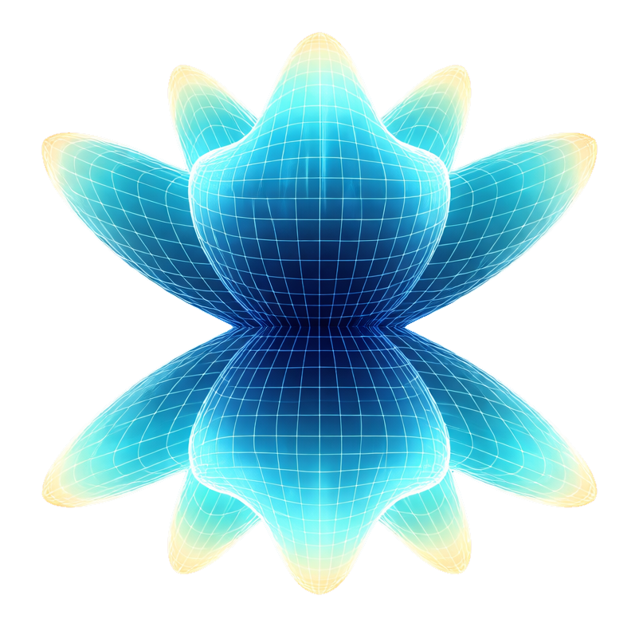

ℹThis software prioritizes QRZ ADIFs, but other logs will also work. You are not required to have an API key; it is optional.
Welcome to Polarplot
Polarplot is a real-time amateur radio QSO visualizer. Drop in your ADIF log file and watch your contacts light up on an interactive world map with geodesic great-circle paths, country flags, clustering, and full station bio lookups.
Set your home station callsign and grid square, then import any ADIF file — from QRZ, WSJT-X, N1MM, or any other logging software. Polarplot decodes callsign prefixes, Maidenhead grids, and embedded coordinates. For logs without location data, use QRZ Resolve to pull full station details from QRZ. This is not magic and it cannot pull data that does not exist.
How to Get Started
1. Enter your callsign and grid square (or GPS coordinates) in the sidebar.
2. Drag and drop your .adi or .adif file onto the drop zone.
3. Optionally add your QRZ credentials to resolve missing station data.
4. Click the stat cards at the bottom to drill into contacts, countries, bands, and modes.
Core Features
🗺 Interactive MapDark Matter tile layer with great-circle geodesic paths to every contact.
🌐 3D Globe ViewToggle a WebGL globe for a stunning planetary QSO overview.
📡 ADIF SupportWorks with QRZ, WSJT-X, N1MM, Log4OM and any standard ADIF export.
🏳 Country FlagsAuto-resolved from callsign prefix, DXCC field, or grid coordinates.
🔍 QRZ LookupBulk-resolve missing station data via QRZ XML API (key optional).
📊 Stats PanelsDrill into total contacts, DXCC entities, bands, and modes worked.
🎨 5 ThemesDark, Light, Terminal, Space, and Amber — switch with one click.
⚡ Fast ParsingWeb Worker streams large ADIF files without blocking the UI.
📸 ScreenshotExport a high-resolution image of your current map or globe view.
🛰 Satellite ImagerySwitch to extremely high quality satellite tile overlay for a real-world map view.
〰 Contact PathsToggle geodesic great-circle lines from your QTH to every logged contact.
🔎 Callsign & Country SearchFilter the map live by callsign prefix or DXCC country to zero in on specific contacts.
Map Controls
DragPan the map
Scroll / PinchZoom in and out
Click MarkerOpen station card popup
📜 Show All QSOsOpen the Biography Vault for that callsign
Home BeaconClick to fit map around all contacts
🌐 Globe ButtonToggle between 2D map and 3D globe
Layers ButtonSwitch map tile overlays
Sidebar Controls
Contact PathsToggle geodesic great-circle lines
Map ClusteringGroup nearby markers into clusters
KM / MISwitch distance unit display
Callsign SearchFilter map by callsign prefix
Country FilterShow only a specific DXCC entity
Band ChipsToggle individual band visibility
Date Range FilterFilter contacts shown on map between two dates
‹ Collapse TabCollapse or expand the sidebar for a full map view
POTA Tactical Mode — Immersive asymmetric layout with shifted station framing for optimal planning visibility
Dynamic HUD Centering — Tactical Focus HUD now calculates true center between active sidebars in real-time
Contextual UI Safety — Dynamic hiding of the 3D globe control during POTA, and POTA controls during 3D sessions
Clean Map Export — New screenshot toggle to disable all stat panels for a pure, distraction-free map visualization
Session Intelligence — Automatic state reset (paths, HUD, and map offsets) when exiting tactical mode
v1.7.0
Signal Heatmap Visualization — Added a high-performance heat layer to the 2D map to visualize signal quality distribution across the globe
Precision Mapping — Accurate conversion for FT8/FT4 SNR (-30 to +20dB) and Voice/CW RS (11-59) to a standardized 0.05-1.0 heat intensity scale
Heat Calibration — Implemented location-based deduplication to prevent "heat inflation" in high-density areas; heat now reflects peak signal quality, not just station count
Sent / Received Toggle — Real-time segmented control to switch the heatmap between your reported signal (Sent) and the signal you received (RCVD)
Enhanced Popups — Station popups now explicitly show both Sent and Received reports (e.g., S: 59 / R: 59) for every contact
Smart Recency Logic — Heatmap points are derived from the most recent contact at each location to reflect current band conditions
v1.6.0
Big thanks to DJ0MA for being the first beta tester of Polarplot, and helping me fix many bugs!
Dedicated Cloudflare Worker proxy — QRZ resolve now works out of the box for all users, no activation required
QRZ resolve now deduplicates callsigns before lookup — each unique station is only queried once, applied to all matching QSOs
Grid-derived contacts now included in QRZ resolve — Log4OM and similar logs with zeroed coordinates are correctly enriched
Adaptive rate limiting with automatic backoff and retry on resolve errors
Portable callsign support — suffixes like /QRP, /P, /MM are stripped before QRZ lookup so all variants resolve correctly
Screenshot title — type a custom label (e.g. POTA, SOTA, Contest) in the export modal and it appears on the saved image
v1.5.0
Collapsible sidebar — collapse the left panel for a full map view with smooth animated tab, works in both 2D and 3D
Date range filter — filter all map contacts by QSO date from/to, works alongside band, callsign, and country filters
Callsign hyperlinks — every callsign in contact cards, popups, and the All Contacts panel links directly to QRZ
Home QTH beacon now appears on the 3D globe by default
Grid-square derived contacts now scatter within their cell instead of stacking on the exact centre point
QSL confirmation feature removed
v1.4.0
Contact line hover tooltip — hover any 2D geodesic path or 3D arc to see great-circle distance (km & mi)
Clicking a contact line opens the same contact card as clicking the dot, in both 2D and 3D
3D globe contact card now locks to the contact point and tracks it as you orbit; fades when it rotates behind the globe
Screenshot modal redesigned — view toggle (Full Map / Camera View) + single Save button
Screenshot countries panel now shows flag thumbnails alongside 3-letter abbreviations
Screenshot watermark moved to bottom-left of the map area and updated to polarplot.net
Screenshot 3D globe panel now renders at full HiDPI resolution, matching the 2D legend quality
Globe screenshot no longer visually jumps — camera repositions behind a veil and dots are properly aligned
Visual Options toggles are blocked with a toast when no log is loaded
Line Distance Hover is disabled until Contact Paths is enabled; warns if toggled while paths are off
Map Clustering auto-enables when entering 3D globe with a log loaded, or when a log is imported while in globe mode
Contact Paths, Line Distance Hover, and Map Clustering all reset correctly when switching between 2D and 3D
Overlay layer picker now closes automatically when switching between 2D and 3D views
Globe arcs turn off instantly without requiring a camera orbit
Browser password autofill enabled for QRZ credentials
v1.3.0
PNG screenshot export with selectable stat panels (2D & 3D)
Tactical Search Hub now filters live in 3D globe, switches to individual dots while searching
Contact card popup locks to dot while orbiting in 3D, fades out when contact rotates behind globe
Distance units (KM/MI) moved to map overlay button group
QRZ Logbook cross-reference — drop your QRZ ADIF export to enrich missing locations without a proxy
Resolve Missing now pre-matches against QRZ logbook before falling back to per-callsign XML lookup
Data Proxy activation link and info tooltip added
Show All QSOs range now correctly uses home location set via Maidenhead grid
GitHub Pages deploy fixed — Node setup action corrected, loading.png and logo.png now bundled correctly
Custom domain support: polarplot.net
Band chips glow on hover
Globe screenshot captures live WebGL frame and HTML dots composited together
v1.2.0
Added 3D Globe view via Globe.gl WebGL renderer
Expanded PREFIX_MAP to cover all ITU amateur prefixes
Coordinate bounding-box fallback for unknown callsigns
Polarplot plots stations using the coordinates or Maidenhead grid square stored inside your ADIF file. If a contact was logged without a grid square, and no GPS coordinates were saved, Polarplot falls back to callsign prefix lookup to estimate a country — but it can only place the pin at a rough country-level centroid, not the real station location. Contacts may land in the ocean if the ADIF data contains a malformed grid, a zeroed-out coordinate (0.0, 0.0), or a prefix that maps to an island or coastal nation. The fix is usually to re-export your log from your logging software with grid squares enabled, or use the RESOLVE MISSING button with QRZ credentials to pull accurate locations.
QRZ exports a well-structured ADIF that includes full GPS coordinates, accurate country names, and DXCC entity data for every contact. Most other logging tools (WSJT-X, N1MM, Log4OM, etc.) export a leaner ADIF that may only contain the grid square or nothing at all — Polarplot then has to infer locations from callsign prefixes alone, which is less precise. QRZ's XML API also lets Polarplot resolve missing station data in bulk and pull live flag and location updates. Other sources are fully supported, but you may see more unknowns and the odd misplaced pin.
Polarplot resolves country and flag through four methods in order: the COUNTRY field in the ADIF, the callsign prefix, the DXCC numeric code, and finally the contact's coordinates. If all four fail — for example a special event callsign, a maritime mobile station, or an unusual prefix not in the ITU allocation table — the station will display as Unknown. Hitting RESOLVE MISSING with QRZ credentials will fix the majority of these automatically.
No. Polarplot works fully offline from your ADIF file with no account required. The QRZ credentials are only needed if you want to use RESOLVE HOME (to auto-fill your location) or RESOLVE MISSING (to bulk-enrich contacts with real data). A free QRZ account with the XML subscription is enough — the API key field is optional if you log in with username and password instead.
A few things to check: make sure your ADIF file has a valid <EOH> header and that contacts end with <EOR>. If contacts appear in the stats counter but not on the map, they likely have no grid square or coordinate data — enable RESOLVE MISSING to populate them. Also check that the band filter chips are all active (none greyed out) and that no callsign search or country filter is set.
The globe renders in WebGL and works best with a dedicated GPU. A few things help: make sure Contact Paths is turned off in the sidebar before switching to globe view — arc rendering is the heaviest operation. On the globe, arcs are off by default and can be toggled with the arc button in the globe toolbar. If you have thousands of contacts, enabling Map Clustering reduces the number of rendered points significantly.
No. Your ADIF file is parsed entirely in your browser using a local Web Worker — nothing is uploaded. Your QRZ password is never saved and only used to fetch a temporary session token directly from QRZ.com. The only optional persistent storage is your API key (if you tick Remember) and your home location, both saved in your browser's localStorage and never transmitted.
Other Software

POLARSCOPE
Antenna Radiation Pattern Simulator
A real-time 3D antenna radiation pattern simulator built entirely in the browser as a single HTML file. Visualise far-field patterns, compare antennas side-by-side, and explore wave propagation — all powered by physics-based electromagnetic models using Plotly.js for 3D rendering.
No installation required. No data leaves your device. No server needed — just open the HTML file in any modern browser.
Polarplot — Ham Radio QSO Visualizer
Copyright (C) 2026 Polarscope Studio
This program is free software: you can redistribute it and/or modify it under the terms of the GNU General Public License as published by the Free Software Foundation, either version 3 of the License, or (at your option) any later version.
This program is distributed in the hope that it will be useful, but WITHOUT ANY WARRANTY; without even the implied warranty of MERCHANTABILITY or FITNESS FOR A PARTICULAR PURPOSE. See the GNU General Public License for more details.
You are free to:
• Use — run the program for any purpose
• Study — access and read the source code
• Share — copy and redistribute the software
• Modify — change the code and distribute your modifications
Under these conditions:
• Any modified version must also be released under GPL v3
• You must include the original copyright notice
• You must make the source code available
Full license text: https://www.gnu.org/licenses/gpl-3.0.html
Contact: m7pxzqrz@gmail.com
Website: https://polarplot.net
Initializing System...
TACTICAL STATION FOCUS
SELECT STATION|0.0 KM
Map Overlays
DRAG to look around · click FPV button again to exit
QRZ Research Node
This panel lets you enrich your contacts with real station data from QRZ.com.
RESOLVE HOME looks up your own callsign and sets your home coordinates.
RESOLVE MISSING bulk-fetches data for any stations that couldn't be identified from your ADIF alone — filling in names, flags, and locations.
A QRZ account is all you need. The API key and credentials are completely optional.
Polarplot uses a dedicated Cloudflare Worker to forward QRZ requests — no setup or activation needed.
✓ Works out of the box for all users on the live site and locally.
✗ Won't work when: The proxy is unreachable or your network blocks external requests. You can enter a custom proxy URL if needed.
Better alternative: Export your QRZ logbook as ADIF and drop it into the QRZ Logbook Reference box below — no proxy needed at all.
Your privacy is safe.
Polarplot does not store, log, or transmit your password. It is used only to obtain a temporary QRZ session key inside your browser, and is never saved to disk or sent anywhere except QRZ.com directly.
Check the GitHub repo for more info.
Export QSO Map
Select which panels to include in the legend alongside your map.
When multiple QSOs are found per contact, Signal Heatmap will map the most recent QSO.